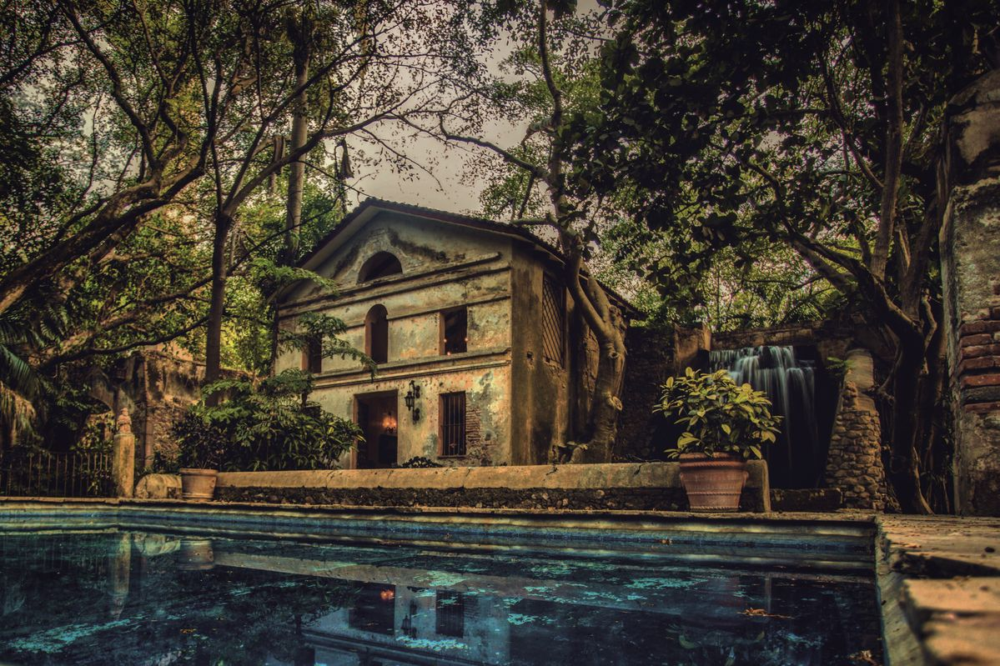

📸 Galería de Imágenes


🏛️ Historia y Reseña Completa
La Hacienda San Gabriel de las Palmas fue founded en 1529 por orden directa de Hernán Cortés, lo que la convierte en una de las haciendas más antiguas e históricas de todo México. Inicialmente, el recinto operó como un monasterio de la orden de los franciscanos, para posteriormente transformarse en uno de los ingenios azucareros más prósperos del país. Debido a su riqueza y ubicación, durante la Guerra de Independencia y la Revolución Mexicana desempeñó un papel estratégico; de hecho, sirvió como un cuartel militar para el general Emiliano Zapata y sus tropas libertadoras.
Hoy en día, este tesoro arquitectónico colonial ha sido rehabilitado con una elegancia impecable como un hotel de superlujo y spa de clase mundial. Conserva intactos sus imponentes muros de piedra, sus bóvedas de medio punto, arcos originales y estanques centenarios. El lugar está rodeado de exuberantes jardines botánicos, palmeras y estanques que crean una atmósfera mística y romántica de total privacidad, ideal para quienes buscan una experiencia de descanso premium, turismo histórico o celebraciones inolvidables.